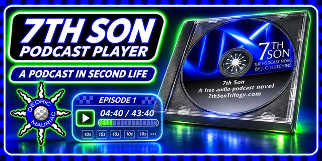

7th Son in Second Life
A podcast player as an audio CD

A 2006 player that brought the 7th Son audio-drama podcast into Second Life, ten seconds of sound at a time.
Executive summary
Why it exists
In 2006 a sound in Second Life could be no longer than 10 seconds, and clips had to be preloaded to play one after another without a pause. A podcast episode is much longer than that.
Outcome
Following the fictional Ministry of Propaganda's Mission #2, I gave copies of the prologue away throughout Second Life. The author, J. C. Hutchins, held a release party in Second Life.
My role
Author.
Technical overview
How it works
A box that looks like an old audio CD jewel case. Clicking it offers to play the CD, visit the book's web page or get a notecard. While playing, floating text shows the play time, the total time and a progress bar. The scripts are generic: paste the uploaded clips' asset IDs into one notecard and set the name and links in another, and anyone could make their own.
Hard parts
The episode was split into 262 clips of exactly 10 seconds, uploaded one by one, and played in order with each next clip preloaded.